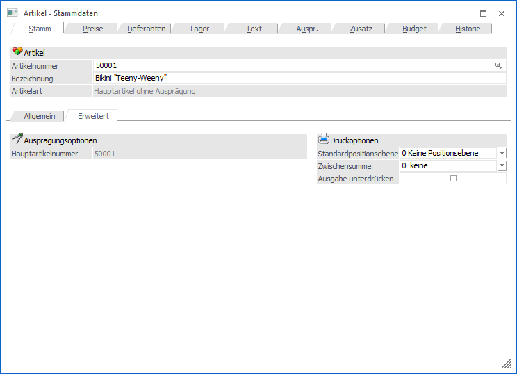
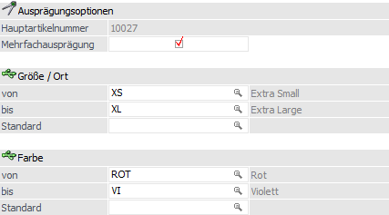
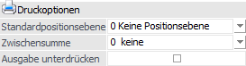

In dem Unterregister "Erweitert" stehen die Druckoptionen des Artikels zur Verfügung. Zusätzlich können die Grundeinstellungen für Ausprägungen definiert werden.

Folgende Eingabefelder, Einstellungen und Informationen stehen zur Verfügung:
Ausprägungsoptionen

Abhängig von der Artikelart des gerade geöffneten Artikels werden weitere Eingabefelder angezeigt:
Ø Haupartikelnummer
Die Hauptartikelnummer gibt bei Ausprägungen den Verweis auf den Ursprungsartikel (genannt "Hauptartikel") an.
Ø Mehrfachausprägung
An dieser Stelle kann für "Hauptartikel mit Ausprägung" definiert werden, ob bei Lagerabgängen (d.h. Verwendung von Lagerbuchungsarten mit " L-", "V+" oder "P+") im Ausprägungsfenster die aufzuteilende Menge auf mehrere (Option aktiviert) oder nur auf eine Ausprägung (Option deaktiviert) verteilt werden kann.
Hinweis
Auch die Funktion "Hauptartikel ohne Auswahl aufteilen" (z.B. in "Kundenbestellungen bearbeiten") berücksichtigt diese Einstellung.
Beispiel
Der Artikel "WB" (Wandfarbe Blau) wird in Chargen geführt und vom Kunden "Annas Sportwelt" bestellt (175 Liter). Der aktuelle Lagerstand beträgt:
ü Charge 1 - 100 Liter
ü Charge 2 - 400 Liter
ü Charge 3 - 100 Liter
ü Charge 4 - 250 Liter
Bei aktivierter Mehrfachausprägung wird durch Anwahl des Buttons "Hauptartikel ohne Auswahl aufteilen" wie folgt aufgeteilt:
ü Charge 1 - 100 Liter
ü Charge 2 - 75 Liter
Bei deaktivierter Mehrfachausprägung wird durch Anwahl des Buttons "Hauptartikel ohne Auswahl aufteilen" wie folgt aufgeteilt:
ü Charge 2 - 175 Liter
D.h. es wird die erste vom Bestand passende Ausprägung gewählt.
Hinweis
Wenn die am besten passende Ausprägung automatisch gewählt werden soll (hier: "Charge 4"), dann muss die Option "Mengenoptimierung" (WinLine FAKT - Stammdaten - Ausprägungen - Ausprägungen initialisieren - Register "Einstellungen") aktiviert werden.
Achtung
Die Option "Mehrfachausprägung" steht nur zur Verfügung, wenn diese im Programmbereich "Ausprägungen initialisieren" aktiviert wurde.
Ø Ausprägung 1 (hier "Größe / Ort") / Ausprägung 2 (hier "Farbe")
Bei "Hauptartikeln mit Ausprägungen" werden an dieser Stelle die definierten Ausprägungsbereiche angezeigt.
Zusätzlich kann unter "Standard" die Ausprägung hinterlegt werden, welche als Standard in der Belegerfassung herangezogen werden soll.
Hinweis
Damit der Standard berücksichtigt wird muss in der Belegart (WinLine FAKT - Stammdaten - Belegstammdaten), im Register "Optionen", die Einstellung "Ausprägungen Vorbelegung" auf "3 - Vorbelegung vom Artikel" gestellt sein.
Ø Chargen-/Identnummer
An dieser Stelle kann bei den einzelnen Chargen-/Identnummern oder FIFO-/LIFO die aktuelle Chargen- oder Seriennummer des Artikels hinterlegt bzw. geändert werden.
Ø Ablaufdatum / Herstelldatum
Bei den Chargennummern bzw. FIFO/LIFO wird hier das hinterlegte Datum angezeigt und kann geändert werden.
Druckoptionen

Unter dem Bereich "Druckoptionen" können Standardeinstellungen für das Druckbild eines Artikels hinterlegt werden. Diese werden automatisch bei der Belegerfassung berücksichtigt.
Hinweis
In der Belegerfassung kann dieser Standard pro Erfassungszeile geändert werden.
Ø Standardpositionsebene
Hier kann die Positionsebene hinterlegt werden, mit welcher der Artikel in der Belegerfassung versehen werden soll.
Ø Zwischensumme
An dieser Stelle kann hinterlegt werden, ob bzw. in welche automatische Zwischensumme der Wert des Artikels fließen soll.
Hinweis
Die Texte der 10 automatischen Zwischensummen können in den Belegoptionen (WinLine FAKT - Stammdaten - Belegstammdaten - Belegoptionen) definiert werden.
Ø Ausgabe unterdrücken
Bei Aktivierung dieser Option wird der Wert (Betrag) des Artikels in der Endsumme des entstehenden Belegs berücksichtigt, aber der Artikel selber nicht gedruckt.